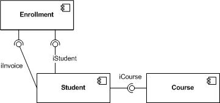
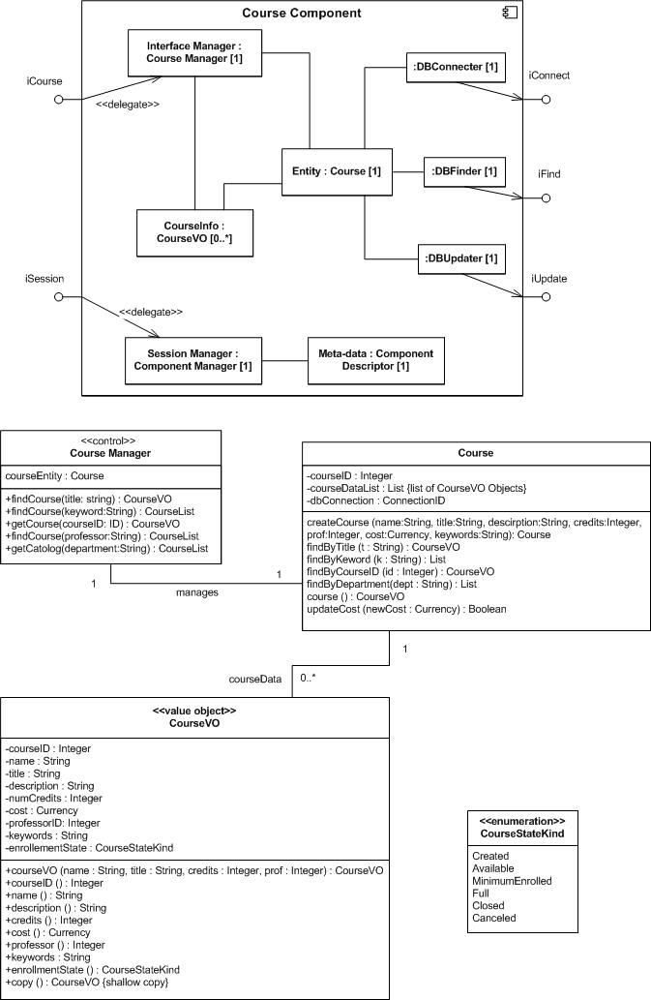

OUM |
Task Overview |
||
Method Navigation |
Current Page Navigation |
||
|
|
||||||||
The purpose of this task is to develop the detailed design for a software component. A software component is an executable module (.exe) that contains a number of interoperating processes or classes, which work together to perform the high-level functional responsibilities for a major part of the system.
For example, one component for a University Registration System might be the “Catalog Manager”. The “Catalog Manager” component provides services to update, publish, query, print, and maintain the catalog of courses offered by the University. This component would have a well-defined interface that would be used by other components (such as the “Course Registration Manager” and “Professor” components) to access catalog related information while encapsulating or hiding the inner details of its processing.
The main focus of this task is to design the inner-workings of the component for efficient, accurate processing. Design patterns may be used to improve the run-time architecture of the component, and its operational interface(s) will also be designed and promoted to ensure proper use of the component’s functionality.
In a commercial off-the-shelf (COTS) application implementation, this task is performed only for those requirements that can only be satisfied through custom-built components that extend the functionality of the COTS system and/or integrate the COTS system with other COTS or legacy systems.
This task is executed in parallel with the following tasks:
Information from the Module View that was added to the Architecture Description (created in RD.130) work product during DS.040, Develop Design Architecture Description, is also used as input to the software component under design. The Module View specifies what behavior the component must perform, the interfaces it must provide, and the interfaces it will require of other components. Also, data and behavior from the above tasks will be utilized and decomposed into a set of steps that guide the developer in fulfilling the various use cases in whole or part. This typically takes the form of a simple design document that contains the relevant pieces of the component design and the dependencies between them.
The standard and recommended notation for completing this task is to use the UML component, class, sequence, and/or state diagrams. This task may also be accomplished using a non-UML approach that employs other notational or textual techniques including entity-relationship diagrams (ERDs), functional hierarchy charts, pseudo-code or other descriptions of navigation or control logic, or an interface control document (ICD).
C.ACT.DC Design - Construction
Software Component Design
The work product consists of the set of models required to illustrate that the component is independent of other components and their interfaces, that the component provides all the interfaces it is expected to provide, and the realization of the interfaces and the required operations are correct.
Typically, this work product would exist as part of the overall Design Model in a repository. In some cases, when it is necessary for sign-off or hand-off to a remote implementation team, the work product may be organized, along with other design work products, into a Design Specification (DS.140). Please see the Develop Design Specification (DS.140) task overview for further information and guidance.
You should follow these steps:
No. |
Task Step | Component | Component Description |
|---|---|---|---|
1 |
Collect relevant design elements from the Architecture Description (RD.130). | None | From the Conceptual View of the Architecture Description (RD.130) extract information about all of the classes, use cases, and functions for which this component is responsible. From the Module View of the Architecture Description extract all required interface information about your component. |
2 |
Decompose components. | Composite Structure | The Composite Structure diagram shows the relationships among the parts within a module. |
3 |
Utilize Design Patterns. | Design Patterns | Design Patterns provide guidance for proven ways of solving design problems. |
4 |
Design classes. | Class Diagram | The lowest level component is comprised of classes that realize the behavior required of the module. Each attribute, operation, and method must be detailed according to the nature of the class (active, passive, semi-active). |
5 |
Define class lifecycle. | State Diagram | Use a State Diagram to design the dynamic behavior for classes with significant state changes during an instance’s lifecycle. |
6 |
Design class interactions. | Interaction Diagram | Use an Interaction Diagram, such as the sequence diagram, to explore then specify the behavior needed to accomplish the interaction. |
During Design, you identify and optimize dependencies between software components.
In general, dependencies between the designed components should be minimized wherever possible. Preferably, the dependencies should be with the interface of the component rather than the component itself. This is done to provide stability between the components often referred to as "loosely coupled". This technique ensures that the component may be substituted by another component that provides the same interface but a different internal design without affecting the dependent components.
In addition, component interfaces and contents (classes contained within the components that provide the interfaces of the component) are identified and documented.
*Use the following to access task-specific Application Implementation supplemental guidance.
In this step, you are working on a specific component. Look to the Module View of the Architecture Description (RD.130/DS.040) to understand the context of your component with all the other parts of the system and the interfaces you must provide as well as the interfaces you will use from other components. Look to the Conceptual View in the Architecture Description (RD.130/AN.040) to find design elements that were mapped from the Conceptual View into the Module View. These elements may include use case realizations, classes, and functions. There may be interaction, state, and activity diagrams that will give you further insight as to the behavioral and dynamic nature of the elements for your component. Look to the Execution View of the Architecture Description (RD.130/DS.040) to help you understand the runtime issues to which you must design.
To fully design the component, you start with all the elements when you focused on the relevant module in the first step. Unfortunately, the word component is overloaded with lots of different meanings from UML, Systems Design, Architecture Best Practices, and software platform technologies such as Java EE and .Net. Here component is defined as a modular, replaceable unit that provides well-defined interfaces to the outside of the component whose internal fully encapsulated parts perform the behavior of the component without outside knowledge.
Arrange the collected classes as parts inside your component. Now consider which classes will perform boundary, control, or entity behavior. This is similar to what happens when developing classes to realize a Use Case’s behavior. This time you are developing classes to realize the behavior of the component. Which class or classes will be the component’s delegate to handle its provided interface(s)? Add classes when necessary. Which class or classes will handle the internal flow of control for the component? To increase cohesion and decrease coupling you may need to add classes that handle the required interfaces.
If you are designing to a specific software platform, such as Java EE, you may need to add interfaces such as a Home, Session Bean, and Entity Bean. You should add any new classes required by the software platform.
The following component diagram is a simple example of how you can show your static design for the internals of a component:

As you work on the internals of your component, various design issues will come up. For instance, you want to make sure that at runtime there is only one instance of a designated control class created for your component. This is a common problem that the Singleton pattern solves. The boundary class that is the delegate for the provided interface could use the guidance of the Façade pattern. For each of your design issues see if there is a pattern that already solves the problem. Look up the pattern and design your classes accordingly.
Once you have all your classes for your component it is time to design the details of each class. This involves the full specification of each attribute to include visibility, name, data type, multiplicity, (if it is not the default of 1) and any constraints the attribute value must adhere to. Specify each operation to include visibility, name, parameters, and if necessary return type. Specify a method for each operation by describing pre and post conditions for the operation. Then add a description as to how the method will get from the pre to the post condition. Some operation methods are very simple and do not need pre and post conditions. For example the getter operation name():String for the CourseVO class is simply going to return the value of the name attribute so there is not much to say.
Another way to look at a design class is to consider whether they have their own thread of control or not. If instances of a class at runtime initiate method calls to other objects then the class is considered active. Many time control classes are active. If the class’s objects are always invoked by other classes then they are considered passive objects. Value Object type classes are usually passive. Identifying active objects allows you to consider whether to provide them with their own thread of control or not. More threading can lead to better performance at the cost of some complexity.
All the associations for your classes must be designed as well. If a method needs to invoke an instance of another class it needs a reference to it. Add attributes to the class whose data type is the class that needs to be referenced. For example, an instance of the Course Manager class needs to invoke the behavior of one instance of the Course Class. Add an attribute in the Course Manager class, say courseEntity and make its data type Course. In the case where an association is “to-many” instances of the other class you will need to have a reference to a “container.” For instance, the Course needs to reference many CourseVO objects. Add a courseDataList attribute with a List or Dictionary for the data type.
Please note, a class should be defined in one and only one place. If several different teams design different versions of the same class your system will be very hard to maintain and prone to error. If you find that more than one team needs the services of a particular class, place that class and other similar classes into its own package. Then import the package into your component and reuse the class.
The following is a portion of a class diagram showing attribute and operation details. Normally Value Objects would get defined in their own package and imported into the Course component as well as other components. But it is here in this example for illustration purposes.

Each object at runtime has a lifecycle. It gets allocated at some point and comes into being. The object lives out its life performing its behavior when asked and at some point it gets de-allocated. Some objects do not have very interesting lives. They are often passive objects that simply perform some method when they are invoked. These passive objects do not have to remember what has happened in the past nor care about which method might be invoked in the future. For these classes it is not necessary to understand its states of behavior. But other classes, especially active classes have a more exciting life. These classes provide method responses to an operation depending on what has already happened according the state of the object at the time the operation was invoked.
You should explore and then document the design behavior of a stateful class using either a state diagram or a two dimensional table showing start states, state transitions, and end states. As the state diagram develops you will be identifying behavior that must be performed in the different states. Update the class in the class diagram with that behavior and add an attribute that will keep track of the state of instances of the class at runtime. A private attribute that holds the state of the instance helps you maintain encapsulation and ensure that the object only performs the correct behavior at the right time in the right state.
In order to realize the provided interface(s) of the component instances of your class will interact at runtime. For the most important interactions use one of the types of interaction diagrams such as the sequence diagram to specify who invokes whom and in what order. As you detail the sequence diagram, detail out the messages being sent between the lifelines. Make sure these messages have their counterpart as operations on the class diagram. If not, then add them as operations to the respective class. Do not forget to add the method’s pre and post condition information if the method is complex enough.
This task has supplemental guidance that should be considered if you are doing an application implementation. Use the following to access the task-specific supplemental guidance. To access all application implementation supplemental information, use the OUM Application Implementation Supplemental Guide.
This task has supplemental guidance that should be considered if you are doing a Webcenter implementation. Use the following to access the task-specific supplemental guidance. To access all WebCenter supplemental information, use the OUM WebCenter Supplemental Guide.
This task involves the following method roles:
Role |
Responsibility |
% |
|---|---|---|
Designer |
Define and maintain the responsibilities, attributes, relationships and special requirements of the classes making sure that each class fulfills its requirements. Analyze packages within which the classes are maintained. There may be several designers depending on the size of the project, each of which may be responsible for certain classes and packages assigned to them. You may want to use an object designer also. | 60 |
Developer |
Review the design classes in order to assure that they are compatible with the architecture. Design the more complex packages and classes. | 20 |
System Architect |
Participate in definition and review of the design classes to gain an understanding of the application and its architecture. | 20 |
* Participation level not estimated.
You need the following for this task:
Prerequisite |
Usage |
|---|---|
Reviewed Analysis Model (AN.110) |
The Analysis Model is used as input for designing the components and interfaces. The Analysis Model is comprised of all of the Analysis work products. The analysis classes and packages that are part of the Analysis Model are used as a basis to identify components, subsystems, and layers. The Analysis Model represents a collection of all Analysis work products, as available, resulting from the following tasks:
|
Architecture Description |
The Conceptual View, Module View, and Execution View from the Architecture Description must be taken into account to ensure that the design fits within the architectural framework. |
Design and Build Standards (DS.050) |
Prerequisite |
Usage |
|---|---|
Reviewed Analysis Model (AN.110) |
Updates to the Analysis Model may impact the Software Component Design. These work products are organized by package as defined in the Conceptual View of the Architecture Description and will vary based on the type and contents of each Analysis Package. |
Use Case Model (RA.023) |
Updates to the Use Case Model may impact the Software Component Design. |
Architecture Description |
Updates to the Architecture Description, especially the Module View and Execution View, may impact the design of the components, and therefore must be taken into account. |
The following templates and tools are available to assist with this task:
There are currently no templates available to assist with this task.
Tool |
Comments |
|---|---|
| JDeveloper |
The Software Component Design is used in the following ways:
Use the following criteria to check the quality of this work product:

Copyright © 2006, 2016, Oracle and/or its affiliates. All rights reserved.